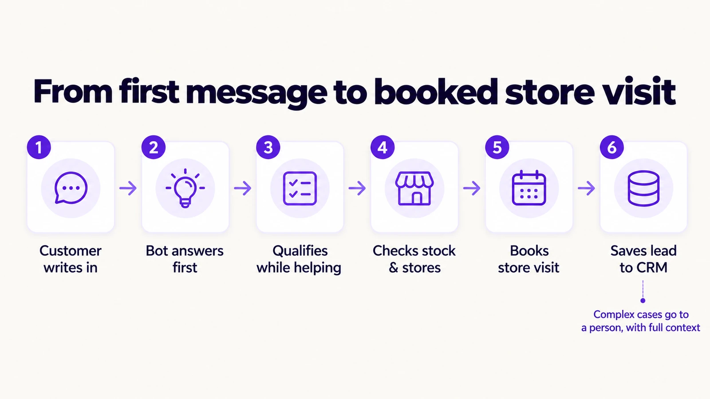
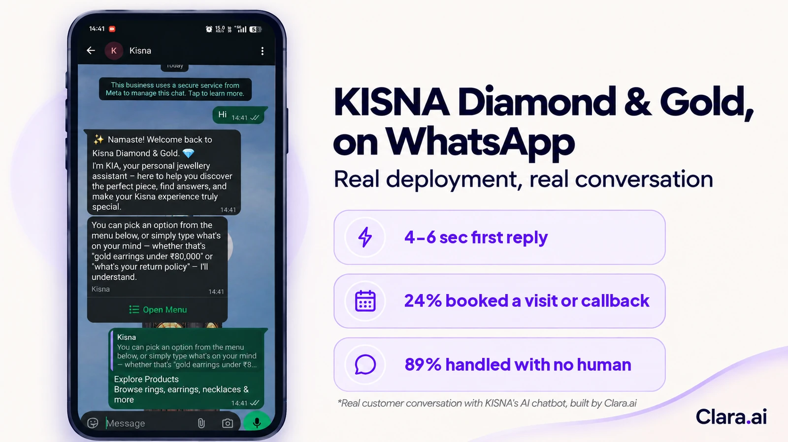
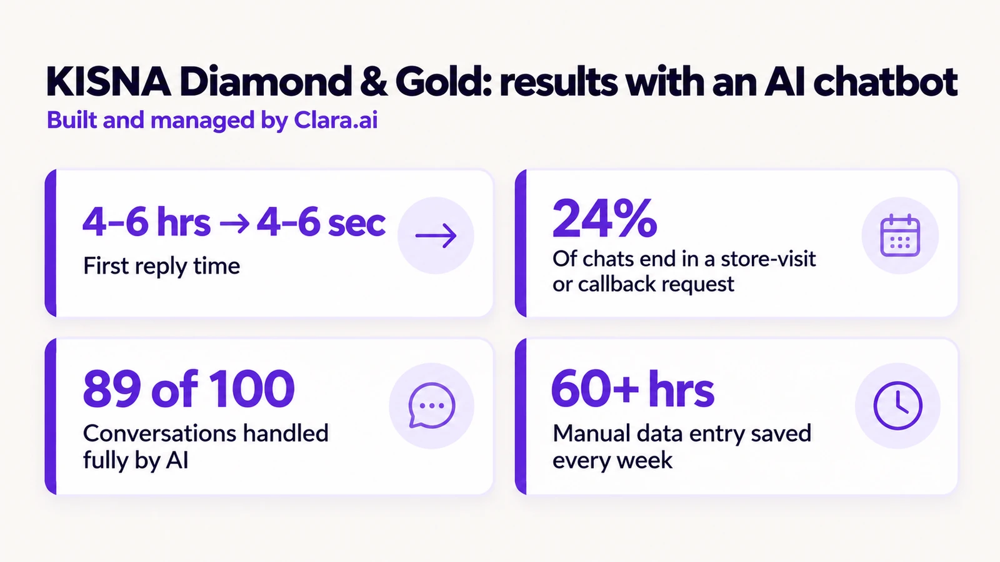

An AI chatbot for jewellery retail lead qualification replies to every enquiry within seconds, on your website and on WhatsApp, at any hour. It asks the questions a jewellery sales team would ask, sorts serious buyers from browsers, books store visits, and writes every answer into your CRM. Your team then spends its time on leads worth calling.
Most lost leads are not lost to a competitor's better offer. They are lost to silence. A buyer fills in your website form at 11 pm, after the kids are asleep. Your sales team sees it at 10 am, works through the weekend backlog, and calls at noon. By then the buyer has spoken to two other companies.
Speed matters more than most sales leaders assume. In a study of 1.25 million sales leads at 42 US companies, Harvard Business Review found that firms contacting a lead within an hour were nearly seven times as likely to qualify it as firms that waited even one hour longer. Against firms that waited 24 hours or more, the advantage was more than 60 times.
The problem is not effort. Sales teams work set hours, enquiries do not, and a person can only hold one conversation at a time.
An AI chatbot closes that gap. The chatbot does not replace your sales team. It makes sure no enquiry waits, and that your team starts each day with qualified leads.
An AI chatbot for jewellery retail lead qualification is software that holds a natural conversation with a new enquiry, asks your qualifying questions, and decides what should happen next. It runs on your website, on WhatsApp, or both, from one brain.
An AI web chatbot is the same assistant placed on your website, where it greets visitors, answers questions and captures details. A WhatsApp chatbot for business does the same job inside WhatsApp, where many customers prefer to message.
Qualification is the part that matters. The chatbot learns your criteria: budget, occasion, metal and stone preference, timeline. It asks for them one at a time and adapts when the customer jumps ahead. Older rule-based bots forced people through rigid menus. An AI chatbot understands free text, so "I need an 18k gold engagement ring under a lakh before December" counts as an answer to four questions at once.
A well-built jewellery retail lead qualification chatbot follows the same path every time, and every step is visible to your team. A typical enquiry runs like this.

Chatbot CRM integration separates a useful assistant from a chat window. Without it, the speed advantage disappears at the first handoff.
A good chatbot knows its limits and hands over early. Complaints, complex pricing, negotiations and sensitive personal situations go straight to a person. The handover carries the full conversation and the lead's answers, so the customer never repeats themselves.
Your team sets the rules. A high-value lead can trigger an instant alert to a named salesperson. A frustrated customer can go to a supervisor.
Customer data and messaging are covered by consent and data-protection rules in most markets, such as GDPR in Europe and PDPL in Saudi Arabia. A responsible build works within them from day one.
The right channel depends on where your customers already talk to you, and the best setup runs one assistant on both. Website chat suits buyers who are researching designs and prices before they visit. WhatsApp suits buyers who want to keep the conversation going on their phone, and it is a primary customer channel for jewellery retail in markets such as the Gulf.
WhatsApp has rules of its own. Under Meta's WhatsApp Business Platform rules, a business can reply freely for 24 hours after a customer's last message. After that window closes, it can only send pre-approved template messages. Your follow-up design has to respect that window, or messages will not go out.
Running both channels from one assistant means the same knowledge, the same questions and the same CRM record. A customer who moves from your website to WhatsApp is still one lead.
| Web form and callback | Human live chat | AI chatbot (web and WhatsApp) | |
|---|---|---|---|
| Hours covered | Office hours | Staffed hours | Around the clock |
| First reply | When someone calls back | When an agent is free | Within seconds |
| Qualification | Done later by phone | Depends on the agent | Same questions, every time |
| CRM entry | Typed by hand | Often typed by hand | Written automatically |

KISNA Diamond & Gold shows what this looks like in a working sales operation. Before the chatbot, a customer who messaged KISNA waited 4 to 6 hours on average for an agent to reply. Clara.ai built an AI chatbot for KISNA on WhatsApp and connected it to the company's systems. The first reply now arrives in 4 to 6 seconds.
The chatbot does more than reply quickly. It answers product questions, then offers a store-visit booking or a callback request. Around 24% of the people who message KISNA go on to complete one of the two.
Out of every 100 conversations, the chatbot handles 89 from start to finish. The other 11 go to a person. Those are the conversations that should reach a person: qualified buyers who need a salesperson to turn interest into a purchase, and customers who need help with an existing order.
The CRM connection carries its own saving. With conversations and lead details written into the CRM automatically, KISNA's team saves more than 60 hours of manual entry every week.
KISNA's feedback to Clara.ai was direct. Its salespeople used to spend hours working through hundreds of leads to find the single-digit percentage worth pursuing. With the chatbot doing that first pass, turnaround time fell sharply, sales improved, and the team reports a significant effect on its P&L.
Clara.ai is an AI implementation company that builds, deploys and manages AI chatbots, calling agents and operations dashboards. Clara.ai diagnoses before it builds, and the work usually starts with one chatbot on one workflow, proven on real traffic before anything expands.
The chatbot is one part of a single system. An operations intelligence dashboard shows what the conversations mean: lead quality by source, response times, and which salespeople convert the leads they receive. Where a lead needs a voice conversation, an AI calling agent can follow up by phone.
Clara.ai works with 19 active enterprise clients across 12 industries, in India and the Gulf, from jewellery retail to real estate and healthcare.
